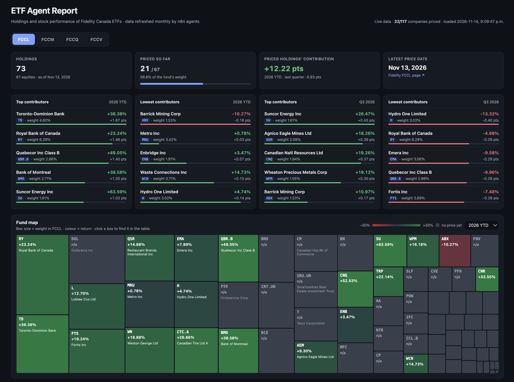
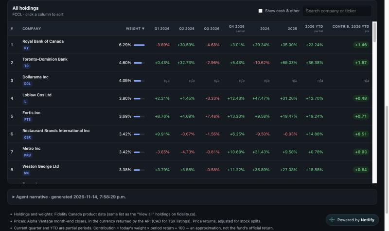

A monthly report that explains what is driving a
Fidelity ETF, holding by holding
Luis Mario
Evan Lin
November 2026
Built with Fidelity data · orchestrated by n8n
The problem
Fidelity’s ETF pages for FCCA and its four
underlying ETFs (FCCL, FCCV, FCCQ, FCCM) list each
fund’s holdings and the percentage weight of each company.
That’s all they show.
They don’t say how each company has performed, or
what has been happening with it.
An investor can see what they own and how much, but not
how each holding is doing.
To find out, they have to look up each company by hand: more
than 100 companies across the four ETFs (117 with a stock
ticker).
Why it matters
The fund page answers
“What’s in my ETF?”
The investor actually needs
“Which companies are helping or hurting my returns, and why?”
This report fills that gap: it pairs each holding’s
weight with its performance and its
news, so the investor can understand and monitor the
fund month by month.
Goal and scope
Build a monthly report that shows, for every company
in the ETF, its historical performance and its recent news.
Feature
Status
2
Performance by quarter and by year: % return for
each quarter (Q1–Q4) and year, next to the company’s weight, with each
holding’s contribution to the fund
LIVE
1
News and sentiment per company: last month’s most
relevant news, rated Very good / Good / Bad / Very bad, with a
short summary and source link
NEXT
Funds: FCCL, FCCV, FCCQ, FCCM (the four ETFs inside FCCA) ·
Frequency: monthly · Per company: ETF weight, quarterly and annual
returns, contribution · Delivery: live web dashboard
The solution in one picture
Built on Fidelity × n8n
Fidelity
The data and the question
The four ETFs inside FCCA: FCCL, FCCV, FCCQ, FCCM
Full holdings list from Fidelity's product data: 269 holdings, weights summing to ~100%
Refreshed on day 1 of every month, so the report always matches the fund
The report answers the question Fidelity's page leaves open: how is each holding doing?
n8n
The engine that runs everything
4 workflows: 2 scheduled, 2 AI agents
AI Agent node with tools: Postgres queries and a Fidelity fetch sub-workflow
Schedule Trigger runs the monthly cycle with no manual steps
HTTP Request batching keeps within the free price API limit (25 a day)
How it runs every month
Day 1
Holdings refresh Downloads the latest holdings of FCCL, FCCV, FCCQ and FCCM from Fidelity (269 holdings) and reuses the tickers it already knows.
Days 2–7
Price collection Gets month-end prices for ~24 companies a day (the free API allows 25 a day). Six days cover all 117 companies.
Any time
Report and dashboard The Returns Agent writes the summary; the dashboard reads live data from Postgres on every visit.
Workflow
Type
Role
Holdings – monthly refresh
Scheduled (day 1)
Full holdings list per ETF
ETF Holdings Agent
AI agent (Gemini Flash-Lite)
Maps company names to TSX tickers
Prices – monthly Alpha Vantage fetch
Scheduled (days 2–7)
Prices → returns in SQL
ETF Returns Agent
AI agent (Gemini Flash-Lite)
Top / lowest contributors summary
Technical depth: what made it hard
Challenge
How we solved it
Fidelity’s page shows only the top 10 holdings
Used Fidelity’s own product data behind the “View all” button: the
full list, weights summing to ~100%
Fidelity gives names, not tickers
The Holdings Agent assigns TSX tickers once; they are
cached and reused every month
Yahoo Finance blocks cloud servers (HTTP 429)
Switched to Alpha Vantage (free key) with a
queue: 24 companies a day, failed symbols move to the
back
Stock splits looked like crashes (Loblaw −67%)
Split detection in SQL from adjusted vs. raw prices → real return
+31.20%
Free AI model allows 20 requests a day
Moved to Gemini Flash-Lite (~500/day) and
redesigned the agents to use 2 requests per run
A public page must not expose the database
Row Level Security on every table; the public key can call
one read-only function only
It actually works
4
ETFs covered
269
holdings with weights
117
companies with a ticker
$0
running cost (free tiers)
Holdings match Fidelity’s full list: weights sum to
99.99–100.02% per ETF.
Real prices verified, e.g. Royal Bank closed at 288.37
CAD on Nov 13, 2026.
Example insight (FCCL, 2026 YTD): Toronto-Dominion
Bank returned +36.38% with a 4.60%
weight, contributing +1.67 pts, the top
contributor.
Tested end to end: holdings → prices → returns → summary → live
page.
Design and user experience

Tabs per ETF · how much of the fund is priced so far · top and
lowest contributors for the year and the last quarter, with bars sized
by contribution
Every holding, side by side

Weight next to quarterly and annual returns · contribution
pills · sortable columns · search by company or ticker · partial periods
labelled
Demo: problem → solution → working product
The problem: open a Fidelity ETF page. It shows
names and weights, nothing about performance.
The solution: show the n8n workflows and the
monthly cycle (holdings on day 1, prices on days 2–7).
The agent: ask the Holdings Agent for
“FCCM”: it builds the full list and finds the tickers.
The product: open the live dashboard, switch ETFs,
sort by contribution and search for a company.
The insight: “Toronto-Dominion Bank added +1.67
points to FCCL this year.”
Feature 1 (news and sentiment) is not built yet. It
is the next step.
FCCA itself is not shown yet: we cover its four
underlying ETFs; the combined FCCA view is planned.
Prices fill in over the month: the free API allows
25 calls a day, so a full refresh takes 6 days. Today 22 of 117
companies are priced; the rest arrive on days 2–7.
A few symbols are not available from the price
source (e.g. Dollarama, Canadian Pacific) and show n/a.
Contribution uses today’s weights for past periods:
an approximation, not the fund’s official return.
Next steps
FEATURE 1News and
sentiment
A News Agent collects each company’s most relevant news from the
past month, rates each item and the month as Very good / Good / Bad
/ Very bad, and stores a short summary with the source link
FCCACombined
view
Combine FCCA’s weight in each ETF with each company’s weight in that
ETF
DELIVERYMonthly email or
PDF
Send the summary and a link to the dashboard on the 8th of each
month
COVERAGEFaster price
refresh
A paid data tier, or a second source for symbols that are
missing
How we meet the judging criteria
Technical Depth & Execution 4 workflows, 2 AI agents, SQL return engine with split adjustment, rate-limit queue, secured public API. Working end to end.
Innovation & Impact Turns "what's in my ETF" into "who drives my returns". Replaces hours of manual research every month, at $0.
Design & User Experience One page per ETF: summary cards, contributor rankings, a sortable and searchable table, plain-language notes.
Demo Problem (Fidelity page) → solution (agents and monthly cycle) → working product (live dashboard).